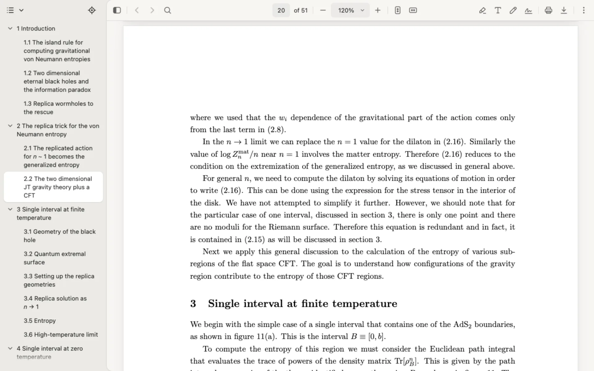

PDF viewerfor Chrome
The PDF reader made for scientific papers.
Search formulas, not just words.
Type a formula into the find bar, in LaTeX (\alpha_1) or plain (alpha_1).
Peek at any link without losing your place.
A link to an equation, figure, section or citation opens in a panel below, its target marked. Your page stays where it is.
⌘/Ctrl + click a link to peek

Copy as LaTeX or Mathematica.
The selection follows the formula's structure: drag into a fraction or a bracket and it is taken whole. Copy, and you get LaTeX, ready for your notes. Or copy it as Mathematica (Ctrl+⌘+C).
Works with every journal.
Whoever the publisher, Epsilon understands the paper and works for you.
- arXiv
- Springer
- Elsevier
- Physical ReviewAPS
- JHEP
- Hindawi
- Chinese Physics C
- CambridgeUniversity Press
- and more
Any PDF
On the web or on your computer.
Highlight
Mark the passages that matter.
Add text
Type anywhere on the page.
Draw
Freehand, on any page.
Sign
Type, draw or upload your signature.
Fill in forms
Right in the viewer.
Print and save
Print it, or save a copy.
Presentation mode
Full screen, page by page.
Your look
Epsilon's or Chrome's, in light or dark.
Your papers stay with you.
- Formulas read locally
- No account
- No analytics in the extension
- The extension sends nothing anywhere
- New in 1.4.5: fraction bars, roots and overlines read by the fonts' own layout rules, about 20% fewer equations missed. APS journals and matplotlib figure labels read as they are set, and equations with words in them read whole.
- Accents and bars over letters read right in more fonts, and accented words copy as they read (Kähler). Books get their chapters in the outline, and a figure link opens with the whole figure in view.
- In 1.4.4, text selects as in Chrome, and Epsilon steps in only at formulas. Displays with words read whole, and older plain TeX papers read better.
- In 1.4.3, papers without links get them: sections, equations, figures, citations and the contents. Click to go there, Cmd or Ctrl+click to peek.
- Papers without an outline get one from their numbered headings, and the tab shows the paper's title.
- Cases, wide accents and integral limits read right, so almost every copy compiles. Earlier, in 1.4.2: copy part of a matrix, and every standard symbol read as its LaTeX command.
- In 1.4 and 1.4.1: select by formula, what you see selected is what is copied; a triple click on a formula takes the whole formula.